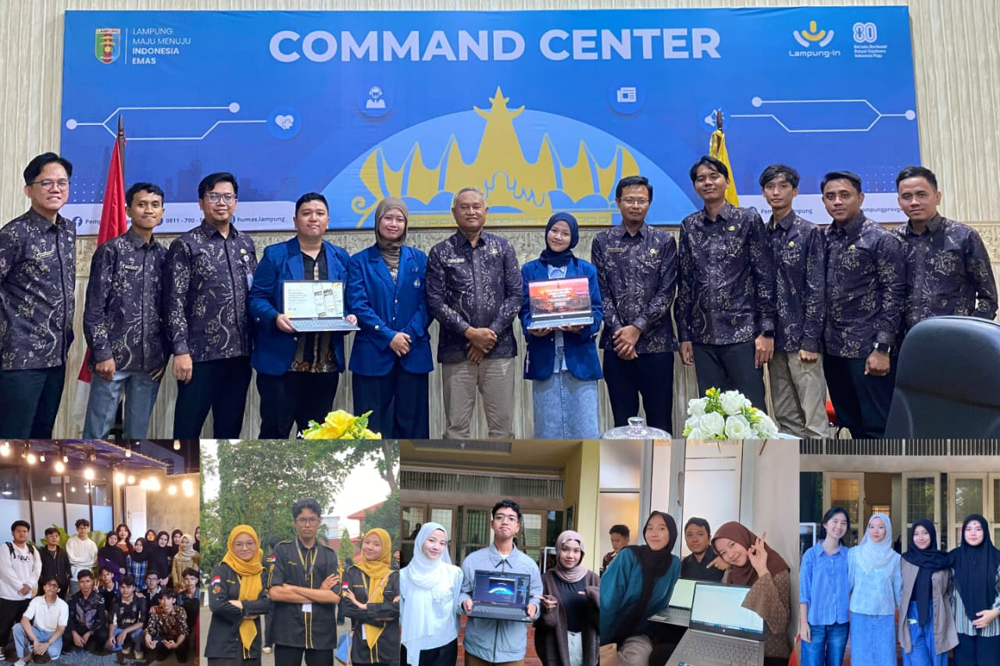
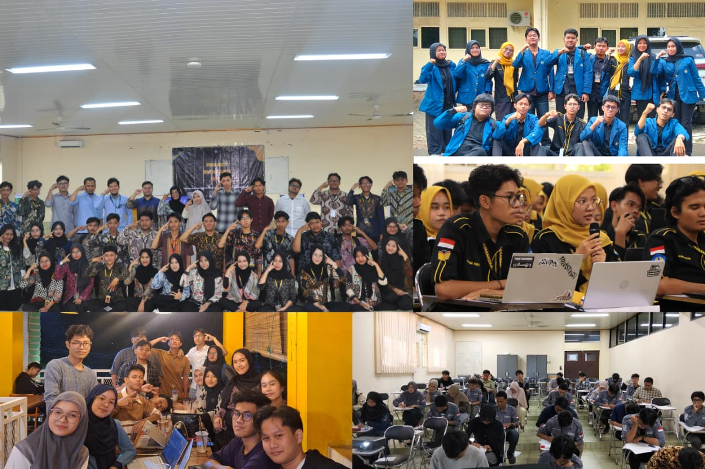
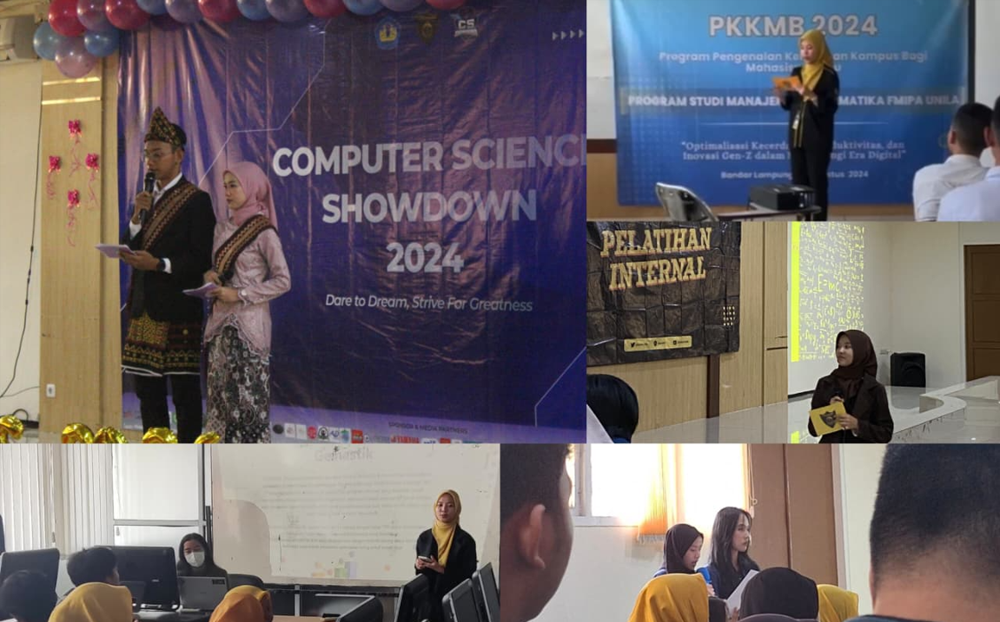

Soft Skills

Team Collaboration
Experienced in active collaboration on joint projects and effective communication within a team

Leadership
Able to lead and coordinate teams in academic and organizational activities, including managing responsibilities, guiding members, and ensuring tasks are completed effectively to achieve common goals.

Public Speaking
Have good communication skills, including being an MC for campus events and conveying ideas confidently in public

Time Management
Ability to manage time between lectures, organizations, and personal projects
Problem Solving
Skilled in analyzing problems and finding effective solutions during technical projects and academic activities. Able to think critically and approach challenges with structured and logical reasoning.
Adaptability
Quickly adapt to new environments, technologies, and responsibilities. Comfortable learning new tools and methods to improve performance in both academic projects and collaborative team environments.
Technical Skills
Frontend Development
Able to build responsive web interfaces using HTML, CSS, and Bootstrap. Comfortable creating structured layouts and simple interactive elements for web applications.
Backend Development
Experience developing web features using PHP and Laravel framework. Able to connect frontend interfaces with backend logic to support basic application functionality.
Database Basics
Basic understanding of relational databases and SQL queries. Have experience working with PostgreSQL and designing simple database structures for web applications.
UI/UX Design
Create wireframes and interface layouts using Figma. Focus on designing simple, clean, and user-friendly interfaces for web and mobile applications.
Version Control
Use Git and GitHub to manage project files, track changes, and collaborate with team members during development projects.
Administrative & Documentation
Comfortable managing documents, organizing information, and preparing simple reports using tools such as Microsoft Office and Google Workspace.